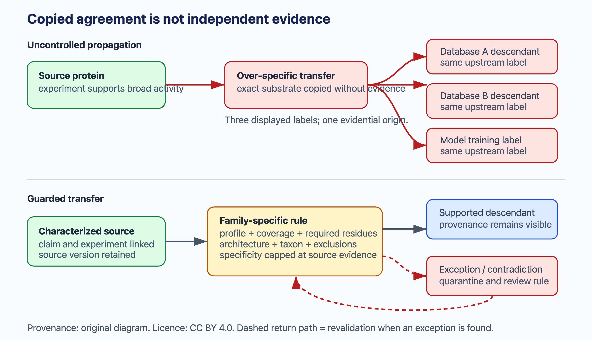
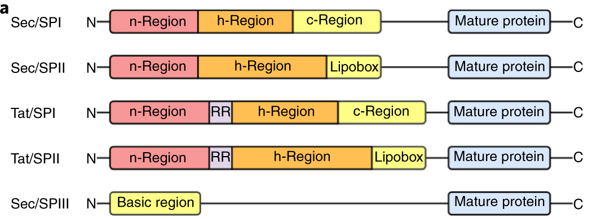

10 Protein function
Classifications, prediction methods, and definitions.
10.1 Overview
Predicting what a protein does is the goal of most sequence analysis. It is also a broad and messy topic: “function” means several things, the data are incomplete and biased, and almost every method in this book contributes to it. This chapter concentrates on the main ideas:
- what function is and how it is described: the Gene Ontology, evidence codes, the structure of GO annotations, and EC numbers (Section 10.2);
- how function is determined experimentally: forward and reverse genetics, knockout collections, RNAi and CRISPR screens, DepMap, and why many knockouts have no visible phenotype (Section 10.3);
- how function is predicted: transfer by homology and its pitfalls, families and domains, genomic context, networks, structure, functional and modification sites, disordered regions, machine learning, and how evidence is combined (Section 10.4);
- subcellular localisation, the sorting signals that determine it, and how their predictors are evaluated (Section 10.5);
- predicting the effects of missense variants (Section 10.6);
- how function prediction is evaluated, and why that is hard (Section 10.7).
The databases used for function annotation are described in Section 2.6, protein families and domains in Section 1.7, and interaction networks in Chapter 11.
10.2 Definitions of function
A prediction can only be judged against a definition, and “function” has no single one. It can mean the biochemical activity of a protein (“serine protease”), the process it contributes to (“blood coagulation”), the place where it acts (“extracellular space”), its phenotypic effect when mutated, or its role in a pathway or complex. Function also depends on context. The same protein can have different roles in different cells, some proteins have several unrelated functions (moonlighting), and many enzymes catalyse side reactions besides their main one (promiscuity). Any computational description must choose which of these aspects to record, and with what vocabulary. Two systems dominate: the Gene Ontology and the Enzyme Commission numbers.
10.2.1 The Gene Ontology
The Gene Ontology (GO) (Ashburner et al. 2000; The Gene Ontology Consortium et al. 2023), described as a resource in Section 2.6, describes gene products along three separate aspects:
- Molecular function (MF): the activity of the gene product itself, such as “protein kinase activity” or “DNA binding”;
- Biological process (BP): the larger programme the activity contributes to, such as “DNA repair” or “T cell activation”;
- Cellular component (CC): where the activity takes place, such as “nucleus” or “mitochondrial inner membrane”.
These are three independent dimensions of annotation, not three definitions of the same thing. A protein can be annotated in all three, but only molecular function describes what the protein itself does; a process or location annotation says little about its activity.
GO has roughly 40 000 non-obsolete terms (2026) (citation needed), organised as a directed acyclic graph (DAG) in which more specific terms are linked to more general ones by relations such as is a and part of. Under the true path rule, an annotation to a term propagates to its ancestors along these relations: an annotation to “serine-type endopeptidase activity” also implies “peptidase activity”. This holds for is a and part of, but not for every relation. A protein annotated to “regulation of” a process is not thereby involved in the process itself. The graph also means that predictions can be made at different levels of specificity: “hydrolase activity” is easy to predict and nearly useless, “serine-type endopeptidase activity” is harder and more informative.
10.2.2 Evidence codes
Every annotation carries an evidence code that records its source: experimental codes (such as IDA, inferred from direct assay, and IMP, inferred from mutant phenotype), phylogenetic and sequence-based codes (IBA, ISS), author and curator statements, and IEA (inferred from electronic annotation), assigned automatically without review.
The kinds of evidence are not equivalent. A direct assay (IDA), such as an enzyme assay of the purified protein, shows a molecular function under the assay conditions, but not that the protein performs it in the cell. A mutant phenotype (IMP) shows that the gene is needed for a process, but not what the protein does in it; the effect may be indirect. Physical interactions (IPI) and expression patterns (IEP) show association, not activity. Computational transfer (ISS, IBA, IEA) is a prediction whose reliability depends on the method and on the evidence for the source protein. A strong claim about function therefore usually combines several kinds of evidence.
Experimental evidence is scarce. Well below 1% of the sequences in UniProtKB have a GO annotation supported by an experimental evidence code (Littmann et al. 2021); the exact figure depends on the release and on which codes are counted as experimental. The other proteins have only predicted annotations, if any, mostly from the methods of Section 10.4. Experimental annotations are also biased. A handful of model organisms and well-studied proteins account for most of them, and a few high-throughput experiments contribute many annotations to general terms (Schnoes et al. 2013). These biases matter both for training predictors and for evaluating them (Section 10.7).
10.2.3 The structure of a GO annotation
A GO annotation is not just a link between a protein and a term. It is a statement with several parts: the gene product (sometimes a specific isoform), a relation such as enables (for molecular function), involved in (for process) or located in or part of (for component), the GO term, the evidence code, the reference that supports it, and the group that made the annotation. Annotations can also carry:
- a NOT qualifier, an explicit statement, based on evidence, that the gene product does not have a function or location. This is different from the absence of an annotation, and it does not propagate to ancestor terms: a protein that is NOT a kinase may still have transferase activity;
- annotation extensions, which add context, for example the substrate of an enzyme, the cell type in which a process occurs, or the target of a regulator.
GO follows an open-world assumption: a missing annotation means that nothing has been recorded, not that the protein lacks the function. This is why predictions that are absent from the database cannot simply be counted as wrong (Section 10.7). Annotations change with every release, as terms are added, merged or made obsolete, so analyses should record the ontology and annotation versions.
Standard annotations describe each gene product separately. GO-CAM (GO causal activity) models link several annotations into a causal model of a pathway, in which one activity regulates or provides input to another, in a specified location and process (Thomas et al. 2019).
10.2.4 EC numbers
Enzymes are classified by the Enzyme Commission (EC) of the International Union of Biochemistry, established in 1955, whose first list appeared in 1961 (citation needed). An EC number has four levels, for example EC 3.4.21.4 for trypsin:
- the class of reaction: 1 oxidoreductases, 2 transferases, 3 hydrolases, 4 lyases, 5 isomerases, 6 ligases and 7 translocases;
- the subclass, for example 3.4, hydrolases acting on peptide bonds (peptidases);
- the sub-subclass, for example 3.4.21, serine endopeptidases;
- the serial number of the specific reaction, for example 3.4.21.4, trypsin.
In 2026 there are more than 6000 active EC numbers (citation needed). The EC system classifies reactions, not proteins: unrelated enzymes that catalyse the same reaction get the same number (analogous enzymes, Section 3.5), and homologous enzymes in the same family can have different numbers. Detailed data on each enzyme, such as kinetic parameters, substrates, inhibitors and organism, are collected in BRENDA (Chang et al. 2020), and the reactions themselves are described with chemical structures in Rhea (Bansal et al. 2021), which UniProt now uses for enzyme annotation.
10.2.5 Other descriptions of function
Function can also be described by membership in families and pathways: Pfam and InterPro families (Section 1.7), KEGG Orthology groups and Reactome pathways (Section 2.6), or by interactions with other proteins (Chapter 11). For human genes, phenotypes and diseases associated with mutations (for example in OMIM) describe function at the level of the organism. Each description serves different purposes, and a complete picture of a protein’s function combines several of them. Most of these annotations ultimately rest on experiments, which are the subject of Section 10.3.
See also: further explanation in Section D.10.1; related Wikipedia articles in Section E.10.1.
Parts of this section are adapted from the Wikipedia articles Protein function prediction, Gene Ontology, Enzyme Commission number and Moonlighting protein (CC BY-SA 4.0, retrieved 4 October 2026). Parts of this section are adapted from Matteo Tadiello, Modern Bioinformatics: From Foundations to Frontiers, chapter “Protein Function and Annotation” (CC BY 4.0), used with permission.
10.3 Experimental determination of function
Every prediction method in this chapter is trained on, or transfers from, functions that were determined by experiment. The most general experimental approach is genetic: change or remove a gene and observe what happens to the organism or cell. Large-scale genetic screens are a major source of data for bioinformatics, and analysing them is a bioinformatics problem in its own right.
10.3.1 Forward and reverse genetics
Forward genetics starts from a phenotype and looks for the genes responsible. Organisms are mutagenised at random, with chemicals, radiation or transposons, and individuals with an interesting phenotype are selected. The classical screens for mutations that disrupt the body plan of the Drosophila embryo identified many of the genes that control development (Nüsslein-Volhard and Wieschaus 1980). The difficult step used to be finding the causal mutation, which required genetic mapping by crosses. Today the mutant genomes are sequenced, and the causal variant is found among the many induced mutations by combining mapping with sequencing, for example by looking for the region in which all mutant offspring share the same variants. Forward screens make no assumption about which genes matter, so they can find genes that nobody suspected.
Reverse genetics goes the other way: it starts from a gene, usually identified by sequencing, and disrupts it to see what happens. Since genome sequencing made all genes known, reverse genetics has dominated, and the question “what does this gene do?” is often approached by removing every gene in turn.
10.3.2 Genome-wide knockout collections
The first systematic collection was the yeast deletion collection, in which each of the roughly 6000 open reading frames of Saccharomyces cerevisiae was replaced by a marker cassette (Winzeler et al. 1999; Giaever et al. 2002). Each deletion carries two unique 20-nucleotide barcodes, so that thousands of strains can be grown together in one culture and the abundance of each strain measured by counting its barcode, first with microarrays and later by sequencing. About 1100 genes (around 19%) were essential for growth in rich medium (Giaever et al. 2002). Pooled growth of barcoded mutants became the model for later CRISPR screens, and the same collection was used to map genetic interactions (Section 11.2).
In mouse, the International Mouse Phenotyping Consortium (IMPC) aims to knock out every protein-coding gene and phenotype the mice in a standardised pipeline. Of the first 1751 genes, about a quarter were lethal when homozygous and more were subviable, and many genes without previous annotation produced phenotypes (Dickinson et al. 2016). Because so many knockouts die before or around birth, embryonic phenotyping became part of the pipeline (Adams et al. 2013). Knockout phenotypes are a major source of experimental GO annotations for biological process (Section 10.2).
10.3.3 RNAi and CRISPR
In most other organisms, and in human cell lines, gene replacement by homologous recombination is inefficient. Genes are instead perturbed with RNA interference or with CRISPR:
- RNA interference (RNAi) uses double-stranded RNA, or short interfering RNAs (siRNAs) and short hairpin RNAs (shRNAs), to degrade the matching mRNA (Fire et al. 1998). It produces a knockdown: expression is reduced, usually incompletely. Its main problem is off-target effects: an siRNA also silences transcripts with only limited sequence identity (Jackson et al. 2003), mostly because it acts like a microRNA through its seed region (Jackson et al. 2006; Birmingham et al. 2006). Many hits of early RNAi screens were artefacts of this kind.
- CRISPR–Cas9 knockouts use a guide RNA (sgRNA) to direct Cas9 to a target site, where it cuts both DNA strands. Error-prone repair introduces small insertions or deletions (indels) that usually shift the reading frame and produce a knockout. Off-target cutting at similar sites occurs, but is rarer than RNAi off-target effects.
- CRISPR interference (CRISPRi) and activation (CRISPRa) use a catalytically dead Cas9 (dCas9) fused to a repressor or an activator domain. It binds near a promoter without cutting, and turns expression down or up (Gilbert et al. 2014). CRISPRa allows gain-of-function screens, which are impossible with knockouts.
Knockdown and knockout phenotypes can disagree for several reasons. A knockdown leaves some protein, which may be enough. A knockout may be compensated: in zebrafish, mutants of some genes were normal while morpholino knockdowns of the same genes were not, because the mutation induced the expression of related genes (Rossi et al. 2015). Off-target effects can create phenotypes in either method, and an in-frame indel may leave a partly functional protein. Agreement between independent reagents, such as several guides or siRNAs against the same gene, and rescue by re-expressing the gene, are therefore the standard of evidence.
10.3.4 Pooled CRISPR screens
In a pooled screen, a library of lentiviruses carrying several guides per gene for every gene in the genome is introduced into a population of cells at a low dose, so that each cell receives about one guide. The cells are grown, or selected for a phenotype such as drug resistance, and the guides are counted by sequencing them from genomic DNA before and after (Shalem et al. 2014; Wang et al. 2014). The integrated guide acts as a barcode, as in the yeast deletion collection. Guides against genes needed for growth drop out of the population; guides against genes whose loss confers resistance become enriched.
The analysis resembles that of RNA-seq counts (Section 7.4):
- Guide counts are normalised for sequencing depth, and a log fold change is computed for each guide between the end and the start of the experiment.
- The guide-level changes are combined into a gene-level score. Since some guides do not cut efficiently, robust methods are used. MAGeCK models the counts with a negative binomial distribution and ranks genes with a modified robust rank aggregation, which asks whether a gene’s guides are ranked higher than expected by chance (Li et al. 2014).
- Genes are called significant with a false discovery rate, and the quality of the screen is assessed by how well it separates reference sets of known essential and non-essential genes (Hart et al. 2014).
A major artefact concerns copy number. Cas9 cutting at many sites in an amplified region causes DNA damage and kills cells regardless of which gene is targeted, so genes in amplified regions appear essential (Aguirre et al. 2016). Methods such as CERES and Chronos model this effect, and Chronos also models the dynamics of cell growth and the delay between cutting and loss of the protein (Meyers et al. 2017; Dempster et al. 2021).
Screens across many cell lines distinguish core essential genes, needed in every cell line, from context-specific dependencies, needed only in some (Hart et al. 2015). The Cancer Dependency Map (DepMap) began with RNAi screens of 501 cancer cell lines (Tsherniak et al. 2017) and has since screened many more with CRISPR. It relates the dependencies of each line to its mutations, expression and copy number. A gene on which only lines with a particular mutation depend is a candidate drug target (Section 7.7). Genes with similar dependency profiles across cell lines tend to work together, so DepMap is also used to predict function by co-essentiality, an idea related to the genetic interaction profiles of Section 11.2.
10.3.5 Arrayed, imaging and single-cell screens
Pooled screens can only measure phenotypes that change the number of cells carrying a guide, through growth or cell sorting. In an arrayed screen, each well of a plate receives one perturbation, so any phenotype can be measured, including cell shape and the localisation of proteins under a microscope. Image-based profiling turns such images into feature vectors that can be compared between perturbations (Section 13.4). Perturb-seq instead reads out both the guide and the whole transcriptome of each cell in a pooled screen, so that the transcriptional effect of every perturbation is measured (Section 11.2, Section 7.6). Such high-content screens give a rich phenotype for every gene, which can be used to group genes into pathways and complexes (Bock et al. 2022).
10.3.6 Why many knockouts show no phenotype
A large fraction of genes show no visible phenotype when they are knocked out, even in a carefully phenotyped organism. In yeast, most deletions grow normally in rich medium, although nearly all of them showed a growth defect under at least one of more than a thousand chemical and environmental conditions (Hillenmeyer et al. 2008). Several explanations apply:
- Redundancy. A paralogue or an alternative pathway can take over. Such genes often show synthetic lethality with their partner (Section 11.2).
- Condition dependence. The gene may only be needed in a condition that was not tested, such as a particular nutrient, stress or developmental stage.
- Small effects. A fitness defect of a few per cent is invisible in a single experiment, but matters over evolutionary time.
- Pleiotropy. A gene with many roles can give an early phenotype, such as embryonic lethality, that hides its later functions.
The absence of a phenotype is therefore not evidence that a gene has no function. Conversely, an observed phenotype is not the molecular function: a growth defect says that a gene matters, not what its protein does. Experimental annotations from screens therefore mostly concern biological processes, and are best combined with the prediction methods of Section 10.4.
Systematic mutation can also be applied within a single protein: deep mutational scanning measures the effect of every possible substitution, and is described with the prediction of variant effects in Section 10.6.
See also: further explanation in Section D.10.2; related Wikipedia articles in Section E.10.2.
Written for this book from the primary literature cited in the text.
10.4 Function prediction
Since only a tiny fraction of proteins has been studied experimentally (Section 10.2), the function of almost all proteins is predicted. The methods use different kinds of information: similarity to characterised proteins, membership of families, the genomic and network context of a gene, structure, and functional sites. Machine learning increasingly combines them, and Section 10.4.10 discusses how far the combined evidence can be trusted.
10.4.1 Annotation transfer by homology
The most common approach is to transfer the annotation of the most similar characterised protein (Whisstock and Lesk 2003). It assumes that homologous proteins have similar functions, which holds approximately but with important exceptions:
- Sequence identity thresholds. Function is more conserved between closely related proteins. Studies of enzymes found that the first three digits of the EC number were usually conserved above about 40% sequence identity, but that the full EC number could differ even above 50% identity (Devos and Valencia 2000; Rost 2002; Tian and Skolnick 2003). Below about 30%, in the twilight zone (Section 1.2), specific functions are often not shared, and usually only more general functions are conserved. These figures are empirical tendencies in particular data sets, not decision rules. There is no universal identity threshold for safe transfer: it also depends on the length and coverage of the alignment, the protein family, whether active-site residues are conserved, the domain architecture, and how specific the transferred function is.
- Domain architecture. Multidomain proteins are common, especially in eukaryotes. A BLAST hit that covers one domain says nothing about the others, so transferring the annotation of a whole protein from a partial match is a common source of errors. Annotation should consider whether the domain architectures match (Section 1.7).
- Orthologues vs. paralogues. Orthologues, separated by speciation, are expected to keep the same function more often than paralogues, which may have diverged after duplication (Section 3.5). This ortholog conjecture is widely used, for example in eggNOG-mapper, which transfers annotations from precomputed orthologous groups (Cantalapiedra et al. 2021). Tests of the conjecture have given mixed results: one study of expression data found paralogues more similar in function than orthologues (Nehrt et al. 2011), while an analysis of experimental GO annotations found orthologues weakly but significantly more similar (Altenhoff et al. 2012). Orthology is therefore useful evidence, not a guarantee: orthologues can change function, and many paralogues keep the same function.
- Error propagation. Annotations transferred from proteins whose own annotations were predicted can spread errors through databases (Gilks et al. 2002). Analyses of enzyme superfamilies found high rates of misannotation in automatically annotated databases (Schnoes et al. 2009), which is why evidence codes and the provenance of annotations matter (Section 10.2).
10.4.2 Family- and domain-based annotation
Rather than transferring function from a single best hit, family-based methods assign proteins to curated families with profile hidden Markov models (HMMs) and other signatures, and attach annotations to the family or domain (Section 1.7). InterPro integrates Pfam and the other member databases, and maps many entries to GO terms (InterPro2GO) (Blum et al. 2024). More specific resources define families of proteins that share the same full-length function, with curated annotation rules that UniProt uses to annotate unreviewed entries automatically (Bateman et al. 2024). The CATH functional families (FunFams) divide structural superfamilies into functionally coherent groups (Sillitoe et al. 2020). Deep learning models can also classify sequences into Pfam families directly (Bileschi et al. 2022). Families transfer function more safely than a single best hit, but only when the family is functionally homogeneous.
10.4.3 Genomic context
Homology-based methods fail when no characterised relative exists. Comparative genomics provides information that does not depend on similarity to a characterised protein. Three kinds of genomic context suggest that two proteins are functionally linked, typically in the same pathway or complex:
- Gene fusion (the Rosetta stone method): two proteins that are separate in one organism are fused into a single chain in another, which suggests that they interact (Marcotte, Pellegrini, Ng, et al. 1999; Enright and Ouzounis 2001).
- Conserved gene neighbourhood: genes that are adjacent in many distantly related prokaryotic genomes, often in operons, tend to work together (Dandekar 1998; Overbeek et al. 1999).
- Phylogenetic profiles: proteins that are present or absent together across many genomes are likely to be needed together (Pellegrini et al. 1999).
These methods predict links, not functions: the function of an uncharacterised protein is inferred from its known partners. They work best for prokaryotes, where gene order is conserved and many genomes are available, and they were among the first sources of evidence integrated into STRING (Chapter 11).
10.4.4 Networks: guilt by association
Genomic context is one source of links among many. Proteins that interact physically, are co-expressed, or share genetic interactions also tend to share functions. Network-based prediction propagates annotations through such networks (Sharan et al. 2007; Marcotte, Pellegrini, Thompson, et al. 1999). The simplest version assigns to a protein the most common functions of its neighbours (guilt by association). More advanced methods consider the whole network, for example by diffusion, label propagation or graph neural networks. Structural modelling of interactions has been used to predict an interactome for the whole human proteome and to annotate proteins from it (Garzón et al. 2016). The networks themselves are described in Chapter 11. Guilt by association is weakened by hubs, multifunctional proteins and networks that mix conditions.
10.4.5 Structure-based prediction
Structure is more conserved than sequence (Section 9.5), so structural similarity can reveal homology, and therefore possibly function, when sequence similarity is lost. Structure also shows features directly related to function: binding pockets, conserved surface patches and catalytic sites. Servers such as ProFunc combine fold comparison with searches against libraries of active-site templates, such as the catalytic triad of serine proteases (Laskowski et al. 2005). Graph neural networks predict GO terms from the contact graph of a structure together with language-model features (Gligorijević et al. 2021). With AlphaFold models of almost all proteins and fast search with Foldseek (Section 9.5), structure-based annotation can now be applied to whole proteomes. Its limits are those of homology transfer: the same fold often carries different functions, so the local site matters more than the global similarity.
10.4.6 Predicting functional sites
Function often depends on a few residues: the catalytic residues of an enzyme, the residues that bind a ligand or metal, or a modification site. Predicting these sites is useful in itself, for example to choose residues for mutagenesis, and it makes annotation transfer more reliable, since a homologue that has lost a catalytic residue has probably lost the activity. Three kinds of information are used:
- Sequence motifs. Short patterns and profiles, such as those in PROSITE (Sigrist et al. 2012), describe catalytic sites, binding sites and modification sites (Section 1.7). Short patterns match by chance, so a motif hit alone is weak evidence.
- Conservation. Functional residues are usually among the most conserved positions in a multiple sequence alignment of a family (Ashkenazy et al. 2016). Conservation also reflects structural constraints, so conserved residues on the surface, or residues conserved within a subfamily but different between subfamilies (specificity-determining positions), are more informative than conservation alone.
- Structure. Geometric methods detect pockets and clefts that can bind ligands (Le Guilloux et al. 2009), and catalytic sites can be recognised by matching the three-dimensional arrangement of residues to templates of known active sites, such as those collected in the Mechanism and Catalytic Site Atlas (M-CSA) (Ribeiro et al. 2017). Combining pockets with conservation is more reliable than either alone, and predicted structures make these methods applicable to almost any protein.
10.4.7 Predicting post-translational modification sites
Post-translational modifications (PTMs) are a special kind of functional site: a residue that is covalently modified, often by an enzyme that recognises a short sequence around it. Predictors exist for the most common types:
- Phosphorylation. Kinases phosphorylate serine, threonine and tyrosine. NetPhos used neural networks trained on known sites to predict whether a residue is phosphorylated (Blom et al. 1999), and NetPhosK and later methods predict which kinase modifies it (Blom et al. 2004). Kinase-specific prediction rests on the preferred sequence around the site, for example arginine at position \(-3\) for basophilic kinases such as PKA, or proline at \(+1\) for proline-directed kinases such as CDKs and MAP kinases. Substrate preferences measured with peptide libraries for almost all human serine/threonine kinases now give a systematic basis for such predictions (Johnson et al. 2023). Deep learning methods predict many PTM types from sequence (Wang et al. 2020).
- Glycosylation. N-linked glycans are attached to asparagine in the sequon N-X-S/T (X not proline), but only in proteins that enter the secretory pathway, and only on the side of the membrane facing the lumen. NetNGlyc predicts which sequons are used (Gupta and Brunak 2002). O-linked glycosylation on serine and threonine has no simple motif, and NetOGlyc was trained on sites mapped by mass spectrometry in engineered cell lines (Steentoft et al. 2013).
- Lipidation. N-myristoylation of an N-terminal glycine, S-palmitoylation of cysteines, prenylation of a C-terminal CaaX box and the glycosylphosphatidylinositol (GPI) anchor (Section 10.5) attach proteins to membranes, and have their own predictors (Xie et al. 2016).
The key caveat is that a predicted motif is not the same as a modified site. A motif says that a residue could be modified by an enzyme with that preference. Whether it is modified in a given cell depends on whether the protein meets the enzyme: the right compartment, the right expression time, the right docking sites, and a residue that is accessible on the surface or in a disordered region. For example, many N-X-S/T sequons in secreted proteins are not glycosylated, and the topology of the protein constrains which can be (Zielinska et al. 2010). Motifs are short, so most proteins contain many matches by chance, and precision on a proteome scale is low.
Most training data now come from mass spectrometry (MS). Phosphoproteomics has mapped hundreds of thousands of sites (Section 8.5), collected in databases such as PhosphoSitePlus (Hornbeck et al. 2014). These data have their own biases. Abundant proteins and well-ionising peptides are over-represented, and a site that was not observed is not necessarily unmodified, so true negatives are lacking, as for protein interactions (Section 11.4).
Being modified also does not mean being functional. Many observed phosphosites are poorly conserved and may be the result of non-specific kinase activity (Landry et al. 2009). A machine learning score that combines conservation, structure and other features has been used to rank the human phosphosites by their likely functional importance (Ochoa et al. 2019). For annotation, a predicted PTM site is a hypothesis, an observed site is a fact about modification, and a functional site needs further evidence, such as a phenotype of mutating the residue.
10.4.8 Disordered regions and short linear motifs
Not all function is carried by folded domains. Many proteins, especially in eukaryotes, contain long intrinsically disordered regions that do not fold on their own (Section 3.6) (Lee et al. 2014). They are rich in short linear motifs (SLiMs) of a few residues that bind folded domains of other proteins, carry modification sites, or act as degradation and targeting signals (Kumar et al. 2021); the nuclear localisation signals and the KDEL motif in Section 10.5 are examples. Many regulatory and signalling functions depend on such regions. They are hard to annotate with the methods above: motifs are short, so they match by chance, they appear and disappear quickly in evolution, and disordered regions align poorly. Family- and domain-based annotation therefore says little about them, and a protein whose domains are all annotated may still have unannotated functions in its disordered regions.
10.4.9 Machine learning and language models
Most current methods combine several sources of evidence with machine learning. DeepGOPlus combines a convolutional neural network on the sequence with homology-based transfer (Kulmanov and Hoehndorf 2019). Protein language models (Section 1.10) provide embeddings that capture function beyond simple sequence similarity. Annotations can be transferred from the protein that is nearest in embedding space rather than in sequence alignment, which also works for distant homologues (Littmann et al. 2021). For enzymes, contrastive learning on embeddings predicts EC numbers more accurately than alignment, especially for poorly characterised families (Yu et al. 2023). The best methods in the latest round of the CAFA assessment combine language models, homology, predicted structures and existing annotations (De Paolis Kaluza et al. 2026) (Section 10.7).
As for all supervised predictors, the reported accuracy of a function predictor depends on how the test proteins are related to the training proteins. If test proteins have close homologues among the training proteins, a method can score well by recognising the homologue rather than by learning anything general, and performance on new families is overestimated. Fair evaluations therefore split data by sequence similarity or by time (Section 12.2), as CAFA does by design.
10.4.10 Combining evidence and the specificity of a claim
In practice, a function is assigned by combining several kinds of evidence: domains, characterised homologues, conserved functional residues, structure, localisation signals and genomic or network context. Two principles limit what can be concluded.
The first is that evidence must be independent to be counted twice. In Bayesian terms, the posterior odds for a function are the prior odds multiplied by a likelihood ratio for each piece of evidence, as in the functional association networks of Section 11.3, but only if the pieces are independent. They often are not. Two databases may display the same annotation because one copied it from the other, a network edge may be text-mined from the paper that supplied the GO term, and member databases of InterPro share seed sequences. Agreement among descendants of one annotation is pseudo-replication, and multiplying their confidences exaggerates the certainty (Figure 10.1).
The second is that an annotation should be no more specific than the evidence supports. Membership of an enzyme superfamily, a probable enzyme class (an EC number to three digits) and a specific substrate (four digits) are separate claims, each needing stronger evidence. Rule-based annotation makes the required evidence explicit. A rule assigns a function only if, for example, a protein matches the family signatures, has the required active-site residues and a compatible domain architecture, belongs to an allowed taxonomic range, and has no excluding feature. UniProt uses such rules (UniRule and ARBA) for unreviewed entries (Bateman et al. 2024) (Section 2.3), and InterPro2GO maps a GO term to an InterPro entry only if the term holds for all members of the entry, so broad families get broad terms (Burge et al. 2012). Withholding an over-specific term is a correct decision, not a failure.
Localisation is one of the few aspects of function that can be predicted directly from sequence signals, without a characterised homologue; it is the subject of Section 10.5.

See also: further explanation in Section D.10.3; related Wikipedia articles in Section E.10.3.
Parts of this section are adapted from the Wikipedia articles Protein function prediction, Sequence homology and Phylogenetic profiling (CC BY-SA 4.0, retrieved 4 October 2026). Parts of this section are adapted from Matteo Tadiello, Modern Bioinformatics: From Foundations to Frontiers, chapter “Protein Function and Annotation” (CC BY 4.0), used with permission.
10.5 Subcellular localisation
Where a protein is located constrains what it can do: an enzyme in the mitochondrial matrix, a receptor in the plasma membrane and a transcription factor in the nucleus act in different contexts. Localisation is also one of the aspects of function that can be predicted most directly from sequence, because proteins are sorted to their destinations by signals in their own sequence.
10.5.1 Sorting signals
Günter Blobel proposed the signal hypothesis in the 1970s: proteins destined for secretion carry an N-terminal signal peptide that directs the ribosome to the endoplasmic reticulum (ER), where the protein is translocated across the membrane and the signal is cleaved off (Blobel and Dobberstein 1975). Blobel received the 1999 Nobel Prize in Physiology or Medicine for this work. Many kinds of sorting signal are now known:
- Secretory signal peptides, 15–30 residues at the N-terminus, with a positively charged n-region, a hydrophobic h-region and a polar c-region ending in a cleavage site recognised by signal peptidase, with small residues at positions −3 and −1 (the “−3, −1 rule”) (Heijne 1986). Bacteria use similar signals for export across the cytoplasmic membrane, including lipoprotein signals and twin-arginine translocation (Tat) signals.
- Transit peptides at the N-terminus target proteins to mitochondria (amphipathic helices rich in positive residues), chloroplasts and the thylakoid lumen.
- Nuclear localisation signals (short basic motifs) and nuclear export signals, which can lie anywhere in the sequence.
- Peroxisomal targeting signals, such as the C-terminal tripeptide SKL (peroxisomal targeting signal 1, PTS1).
- Retention and anchoring signals, such as the C-terminal KDEL motif that keeps proteins in the ER, and signals for the attachment of GPI anchors.
- Transmembrane segments, which anchor proteins in membranes and are predicted as described in Section 9.10.
10.5.2 Predicting signal peptides
Signal peptides were first predicted with weight matrices around the cleavage site (Heijne 1986). SignalP introduced neural networks (Nielsen et al. 1997). The main source of errors was that hydrophobic transmembrane helices near the N-terminus resemble the h-region of signal peptides, so early predictors called many membrane proteins secreted; SignalP 4.0 was trained explicitly to separate the two (Petersen et al. 2011). SignalP 6.0 uses a protein language model and predicts all five types of signal peptide (Figure 10.2) in all domains of life, including their regions and cleavage sites (Teufel et al. 2022). Signal peptide prediction is one of the more reliable sequence-based predictions, because the signal is compact, well defined and supported by many experimentally verified examples.

10.5.3 Evaluating signal peptide and topology predictors
Signal peptide and transmembrane topology predictors label each residue, and their evaluation has pitfalls of its own. The task can be posed in different ways: does the protein have a signal peptide (one label per sequence), where is the cleavage site (one position), or which residues belong to the n-, h- and c-regions (one label per residue). These are not interchangeable: a predictor can recognise a signal peptide without placing the cleavage site correctly, and residue-level accuracy is dominated by the many residues outside the signal. Performance should therefore be reported at the sequence level, as cleavage-site accuracy within a stated tolerance, and separately for each organism group and signal type. As for all predictors, training and test sets must be separated by homology, not randomly (Section 12.2). Agreement between several predictors is not an experimental confirmation when they share training data, and a cleavage site observed by N-terminal proteomics is stronger evidence than any prediction.
10.5.4 Predicting localisation
Predicting the final location of a protein is harder than finding a signal peptide, since it depends on signals anywhere in the sequence, on interactions and on regulation. Early programs such as PSORT encoded known sorting rules as an expert system (Nakai and Horton 1999). TargetP used neural networks to predict N-terminal targeting peptides for the secretory pathway, mitochondria and chloroplasts (Emanuelsson et al. 2000), and TargetP 2.0 used deep learning with attention to show which residues the network relied on (Almagro Armenteros et al. 2019). DeepLoc predicted ten locations from the whole sequence with a recurrent neural network with attention (Almagro Armenteros et al. 2017). DeepLoc 2 uses protein language model embeddings and predicts multiple locations for each protein (Thumuluri et al. 2022). This matters because many proteins are found in more than one compartment: imaging in the Human Protein Atlas placed about half of the 12 000 human proteins it mapped in more than one location (Thul et al. 2017) (Section 8.6). Training data come from UniProt annotations and, for human proteins, from such imaging.
Localisation predictors are useful for annotating proteomes, for finding secreted proteins and drug targets, and for interpreting proteomics data. Their limitations are those of the training data: proteins that move between compartments, are targeted by unusual signals, or have locations that depend on the cell type are predicted poorly. How localisation is measured and classified from images is described in Section 13.5.
Localisation is predicted for whole proteins. The next section turns to the smallest unit of function, the effect of changing a single residue (Section 10.6).
See also: further explanation in Section D.10.4; related Wikipedia articles in Section E.10.4.
Parts of this section are adapted from the Wikipedia articles Protein targeting, Signal peptide, Nuclear localization sequence and Protein subcellular localization prediction (CC BY-SA 4.0, retrieved 4 October 2026). Parts of this section are adapted from Matteo Tadiello, Modern Bioinformatics: From Foundations to Frontiers, chapter “Protein Signals, Membranes, and Localization” (CC BY 4.0), used with permission.
10.6 Predicting the effects of missense variants
Every human genome contains about 10 000 missense variants, which change one amino acid in a protein (citation needed). Most are harmless and a few cause disease. For most of those found in patients the effect is unknown, and such variants of uncertain significance (VUS) are one of the main obstacles in clinical genetics. Variant effect prediction estimates whether an amino acid substitution damages the function of a protein. It is function prediction at the level of single residues.
Three different properties are often mixed up under this heading. Evolutionary constraint describes whether substitutions like this one are tolerated at the position over evolution. A molecular effect is a change in the stability, activity or binding of the protein, as measured in an assay. Pathogenicity is a clinical label: whether the variant causes disease in a person. They are related but not the same. A variant can change the molecular function of a protein without causing disease, for example in a gene where one working copy is enough, and whether a damaging variant causes disease depends on the phenotype, the mode of inheritance, penetrance and the population. Most predictors are trained on, or evaluated against, only one of these, and their scores should be read accordingly.
10.6.1 Conservation and supervised predictors
The basic principle is evolutionary. Positions that are conserved across homologues are functionally constrained, so substitutions there are likely to be harmful, while substitutions to amino acids seen at the same position in other species are likely to be tolerated. The first generation of predictors used this principle directly, or combined it with other features in a supervised classifier:
- SIFT predicts whether a substitution is tolerated from the amino acid frequencies at the position in a multiple alignment of homologues (Ng 2003).
- PolyPhen-2 combines conservation with structural features, such as burial and proximity to functional sites, in a naive Bayes classifier trained on known disease mutations (Adzhubei et al. 2010).
- CADD scores all possible single-nucleotide variants in the genome, coding and non-coding. It combines dozens of annotations in a model trained to separate variants that have survived natural selection from simulated new mutations (Kircher et al. 2014).
Supervised predictors trained on databases of known pathogenic and benign variants, such as ClinVar (Landrum et al. 2017), face a problem of circularity: the same variants, or variants from the same genes, are often used for training and for evaluation, and some clinical annotations were themselves based on earlier predictions. This inflates the apparent performance (Grimm et al. 2015). It is a form of the data leakage discussed in Section 12.2. Evaluations should therefore keep genes and their homologues, not only individual variants, apart between training and test sets.
10.6.2 Unsupervised models of evolutionary sequences
Circularity is one reason why a second generation of methods avoids labelled training data altogether. They learn the distribution of sequences in a protein family and score a variant by how much less likely the mutated sequence is than the wild type under the model, typically as a log-likelihood ratio.
- EVmutation uses the same Potts model as coevolution-based structure prediction (Section 9.8), so that the effect of a mutation can depend on the rest of the sequence (epistasis) (Hopf et al. 2017).
- DeepSequence replaced the Potts model with a variational autoencoder (Riesselman et al. 2018), and EVE applied this approach to human disease genes, classifying variants without using any clinical labels, with accuracy comparable to supervised methods (Frazer et al. 2021).
- Protein language models, trained across all proteins rather than one family at a time, predict variant effects from the likelihood of the substituted amino acid at a masked position. They need no alignment, so they also work for proteins with few homologues. Examples are ESM-1v (Meier et al. 2021) and ESM-1b, which was used to score all possible missense variants in the human proteome (Brandes et al. 2023).
- AlphaMissense fine-tuned an AlphaFold-based model, combining structural context and evolutionary information, on population frequency data as weak labels: variants common in humans and primates were treated as benign. It provides predictions for all 71 million possible human missense variants, and classifies 89% of them as likely benign or likely pathogenic (Cheng et al. 2023). Strictly it is weakly supervised, but it uses no clinical labels.
10.6.3 Deep mutational scanning and population data
Independent data are needed to test predictors without circularity. Deep mutational scanning (DMS) measures the functional effect of thousands of variants of a protein in a single experiment. A library of variants is linked to a selection for function, and each variant is counted by sequencing before and after selection (Fowler and Fields 2014). These data provide benchmarks that are independent of clinical annotation. In a benchmark of 55 predictors against DMS data for 26 human proteins, unsupervised methods such as EVE, DeepSequence and ESM-1v were among the best, and agreement with DMS data tracked performance on clinical variants (Livesey and Marsh 2023).
Population data are a complementary source. Variants that are common in healthy people are unlikely to cause severe disease, and genes in which damaging variants are rarer than expected are intolerant to mutation (gene constraint) (Karczewski et al. 2020). Population frequencies from the Genome Aggregation Database (gnomAD) are described in Section 2.9.
10.6.4 Using predictions
Clinical guidelines for interpreting variants allow computational predictions to be used only as supporting evidence, together with population frequency, segregation in families and functional data (Richards et al. 2015) (Section 5.8). Predictions are probabilities, not diagnoses. They estimate whether a variant disrupts protein function, not whether it causes a particular disease.
Most predictors also do not identify the mechanism. They largely measure constraint, or how deleterious a substitution is, and a high score does not say whether the variant causes loss of function (for example by destabilising the protein or removing a catalytic residue) or gain of function (for example mutations that make a kinase constitutively active, or the activating KRAS G12 mutations in cancer), or acts as a dominant negative. The distinction matters for interpretation: genes can cause disease through one mechanism and not the other, and gain-of-function variants can occur at positions where substitutions are not destabilising, so they may be scored as damaging for the wrong reason or be missed.
The Critical Assessment of Genome Interpretation (CAGI) evaluates these methods in blind challenges, much as CASP does for structure (The Critical Assessment of Genome Interpretation Consortium 2024). Blind, prospective assessment is also how function prediction in general is evaluated (Section 10.7).
See also: further explanation in Section D.10.5; related Wikipedia articles in Section E.10.5.
Parts of this section are adapted from the Wikipedia articles Missense mutation, Multiplexed Assays of Variant Effect and Variant of uncertain significance (CC BY-SA 4.0, retrieved 4 October 2026).
10.7 Benchmarking function prediction
Every method in this chapter claims some accuracy, and the claims are only as good as the evaluation behind them. Evaluating function prediction is harder than evaluating structure prediction, for reasons that are instructive for any field of bioinformatics.
10.7.1 CAFA
The Critical Assessment of Functional Annotation (CAFA) evaluates predictions prospectively, in the same spirit as CASP (Section 9.7). Organisers release the sequences of tens of thousands of proteins that lack experimental annotations. Participants predict GO terms for them. After a waiting period of several months to years, the predictions are evaluated on the proteins that have gained experimental annotations in the meantime (Radivojac et al. 2013). Because the answers did not exist when the predictions were made, they cannot have been used for training. Five rounds had been completed by 2024.
CAFA2 and CAFA3 showed that methods improved, but that simple baselines, such as transferring annotations from the best BLAST hit or predicting the most frequent terms, were hard to beat by a large margin, particularly for biological process and cellular component (Jiang et al. 2016; Zhou et al. 2019). CAFA5 was run as a Kaggle competition, which brought in a large community of data scientists. Its methods improved on all methods from the previous rounds, helped by protein language models, predicted structures and the growth of curated experimental annotations. CAFA5 also introduced evaluation on proteins that already had some (incomplete) annotations, and showed that methods should make better use of existing annotations to predict new ones (De Paolis Kaluza et al. 2026).
10.7.2 The CAFA measures
Predictions are scored by precision and recall over the GO graph. Before scoring, both the predicted and the experimental terms are propagated to their ancestors, so that the hierarchy is taken into account: a prediction of the parent of a correct term counts as partly correct rather than wrong.
For protein \(i\) with experimental terms \(T_i\) and predicted terms \(P_i(\tau)\) at score threshold \(\tau\), both propagated to their ancestors, the protein-centric precision and recall are
\[ \text{pr}(\tau) = \frac{1}{m(\tau)} \sum_{i} \frac{|P_i(\tau) \cap T_i|}{|P_i(\tau)|}, \qquad \text{rc}(\tau) = \frac{1}{n} \sum_{i=1}^{n} \frac{|P_i(\tau) \cap T_i|}{|T_i|}, \]
where precision is averaged over the \(m(\tau)\) proteins with at least one prediction and recall over all \(n\) proteins. The summary is the maximum F-measure over all thresholds:
\[ F_\text{max} = \max_\tau \frac{2\,\text{pr}(\tau)\,\text{rc}(\tau)}{\text{pr}(\tau) + \text{rc}(\tau)}. \]
Because general terms are easy to predict and say little, \(F_\text{max}\) rewards predicting the top of the graph. The minimum semantic distance \(S_\text{min}\) corrects for this (Clark and Radivojac 2013). It weights each term \(t\) by its information content, \(-\log\) of the probability of \(t\) given its parents in the annotated corpus, so that specific, rare terms count more than general ones. The remaining uncertainty \(ru(\tau)\) sums the information content of true terms that were missed, the misinformation \(mi(\tau)\) that of wrongly predicted terms, and \(S_\text{min} = \min_\tau \sqrt{ru(\tau)^2 + mi(\tau)^2}\), where lower is better. Both measures depend on how proteins without predictions are handled, on whether averages are taken over proteins or over terms, and on the ontology release and evidence codes used.
10.7.3 Why function prediction is hard to evaluate
The measures share the difficulties of the underlying data:
- Incomplete annotations. A protein’s experimental annotations are never complete. A prediction that is not (yet) annotated is counted as a false positive, even if it is correct. This is the open-world problem (Section 10.2). Measured precision is therefore usually an underestimate, and methods that predict plausible but not yet tested functions are penalised. No evaluation measure fully corrects for it.
- Multifunctionality and context. Many proteins have several functions, some only in particular cell types, conditions or complexes (Section 10.2). Annotations usually record the context that was studied, so a predictor can appear wrong only because the database lacks the annotation for another context.
- No negative data. Databases record what proteins do, rarely what they do not do, so true negatives are hardly ever known.
- Biased annotations. Experimental annotations come mostly from a few organisms and a few high-throughput experiments, which favour general terms and particular functions (Schnoes et al. 2013). Evaluation on such data rewards methods that predict the common terms.
- Changing ontology and circularity. GO and the annotations change over time, and predictions that were deposited in databases can later be used, directly or indirectly, as evidence for new annotations.
- The definition problem. Since function has several meanings (Section 10.2), different evaluations measure different things, and a high score on GO terms does not guarantee that a prediction is useful to an experimentalist.
These problems explain why progress in function prediction looks modest compared with structure prediction, which has a single, well-defined and experimentally measurable answer. They also illustrate general lessons for evaluating predictors, which are discussed in Chapter 12.
See also: further explanation in Section D.10.6; related Wikipedia articles in Section E.10.6.
Parts of this section are adapted from the Wikipedia articles Critical Assessment of Function Annotation and Protein function prediction (CC BY-SA 4.0, retrieved 4 October 2026). Parts of this section are adapted from Matteo Tadiello, Modern Bioinformatics: From Foundations to Frontiers, chapter “Protein Function and Annotation” (CC BY 4.0), used with permission.
10.8 Key concepts
A checklist for revision.
- What is function? Biochemical activity, process, location, phenotype; context dependence; moonlighting and promiscuity
- Gene Ontology: molecular function, biological process and cellular component as separate annotation dimensions; the DAG and the true path rule (propagation over is a and part of); specificity of terms; evidence codes (experimental, phylogenetic, IEA); how few proteins have experimental annotations; what different kinds of evidence (assay, phenotype, interaction, expression, computation) show; annotation bias
- GO annotations as statements: relations (enables, involved in, located in); evidence and reference; the NOT qualifier and why it does not propagate upwards; annotation extensions; the open-world assumption; versions; GO-CAM causal models
- EC numbers: the four levels and seven classes; EC classifies reactions, not proteins; analogous enzymes; BRENDA and Rhea
- Experimental determination of function: forward vs. reverse genetics; mapping causal mutations by sequencing; the barcoded yeast deletion collection and pooled growth; IMPC; RNAi (knockdown, seed-mediated off-target effects) vs. CRISPR knockout, CRISPRi and CRISPRa; why knockdown and knockout phenotypes can disagree (residual protein, genetic compensation, off-targets); pooled CRISPR screens (guide counts, log fold changes, gene-level scores, MAGeCK, reference essential genes); the copy-number artefact and CERES/Chronos; core vs. context-specific essential genes; DepMap and co-essentiality; arrayed, imaging and Perturb-seq screens; redundancy, condition dependence, small effects and pleiotropy; a phenotype is not a molecular function
- Annotation transfer by homology: identity thresholds for enzymes as empirical tendencies, not rules; domain architecture; orthologues vs. paralogues and the ortholog conjecture (useful evidence, not a guarantee); eggNOG-mapper; error propagation and misannotation
- Family- and domain-based annotation: InterPro and InterPro2GO; curated annotation rules; FunFams; deep-learning family classification
- Genomic context: gene fusion (Rosetta stone), conserved gene neighbourhood, phylogenetic profiles; predicting links rather than functions
- Networks: guilt by association; propagation over networks
- Structure-based prediction: active-site templates; structural similarity; graph neural networks; proteome-wide annotation with predicted structures
- Functional sites: motifs (PROSITE), conservation and specificity-determining positions, pocket detection, catalytic-site templates; PTM site prediction (NetPhos, kinase-specific predictors, NetNGlyc/NetOGlyc and the N-X-S/T sequon, lipidation); a motif is not a modified site, and a modified site is not necessarily functional; MS data as training data and its biases
- Disorder and short linear motifs: functions not carried by domains; why they are hard to annotate
- Combining evidence: likelihood ratios and the independence assumption; pseudo-replication of copied annotations; the specificity of a claim (superfamily vs. EC class vs. substrate); rule-based annotation (UniRule, ARBA, InterPro2GO)
- Machine learning: DeepGOPlus; embedding-based annotation transfer; contrastive learning for EC numbers; homology between training and test sets
- Localisation: the signal hypothesis; signal peptides and their regions; transit peptides, NLS, PTS1, KDEL, GPI anchors; SignalP and the transmembrane-helix confusion; PSORT, TargetP, DeepLoc; multiple locations; the five SignalP 6 signal types (Sec/SPI–III, Tat/SPI–II); sequence-, cleavage-site- and residue-level evaluation; homology-aware splits
- Variant effect prediction: constraint vs. molecular effect vs. pathogenicity; conservation (SIFT), structure (PolyPhen-2), genome-wide scores (CADD); circularity of supervised methods; unsupervised family models (EVmutation, DeepSequence, EVE); protein language models (ESM-1v, ESM-1b); AlphaMissense; deep mutational scanning; gene constraint; clinical guidelines; loss vs. gain of function; CAGI
- Benchmarking: CAFA’s prospective design; baselines; \(F_\text{max}\) (protein-centric precision and recall) and \(S_\text{min}\) (information content, remaining uncertainty and misinformation); propagation over the GO graph; information content; incomplete annotations and the open-world problem; multifunctionality and context; missing negatives; annotation bias; why function is harder to evaluate than structure
10.9 Recommended reading
These papers are recommended for reading in full:
- Ashburner et al. (2000) — the Gene Ontology; how function was turned into a computable vocabulary.
- Whisstock and Lesk (2003) — prediction of protein function from sequence and structure; the classical review.
- Marcotte, Pellegrini, Ng, et al. (1999) — the Rosetta stone method; predicting function from genome context rather than homology.
- Teufel et al. (2022) — SignalP 6.0; signal peptides of all types predicted with a protein language model.
- Cheng et al. (2023) — AlphaMissense; proteome-wide prediction of missense variant effects.
- Zhou et al. (2019) — CAFA3; how function prediction is evaluated, and what the results show.
Titles, abstracts, links and the full texts are in Section A.10; a longer list of further papers is in Section B.10.
10.10 Background reading (open access)
- Protein function prediction (Wikipedia) — Protein function prediction methods are techniques that bioinformatics researchers use to assign biological or biochemical roles to proteins. These proteins are usually ones that are poorly studied or predicted based on genomic sequence data.
https://en.wikipedia.org/wiki/Protein_function_prediction - Gene Ontology (Wikipedia) — The Gene Ontology (GO) is a major bioinformatics initiative to unify the representation of gene and gene product attributes across all species.
https://en.wikipedia.org/wiki/Gene_Ontology - Enzyme Commission number (Wikipedia) — The Enzyme Commission number is a numerical classification scheme for enzymes, based on the chemical reactions they catalyze. As a system of enzyme nomenclature, every EC number is associated with a recommended name for the corresponding enzyme-catalyzed reaction.
https://en.wikipedia.org/wiki/Enzyme_Commission_number - Phylogenetic profiling (Wikipedia) — Phylogenetic profiling is a bioinformatics technique in which the joint presence or joint absence of two traits across large numbers of species is used to infer a meaningful biological connection, such as involvement of two different proteins in the same biological pathway.
https://en.wikipedia.org/wiki/Phylogenetic_profiling - Signal peptide (Wikipedia) — A signal peptide is a short peptide present at the N-terminus of most newly synthesized proteins that are destined toward the secretory pathway. These proteins include those that reside either inside certain organelles, secreted from the cell, or inserted into most cellular membranes.
https://en.wikipedia.org/wiki/Signal_peptide - Protein subcellular localization prediction (Wikipedia) — Protein subcellular localization prediction involves the prediction of where a protein resides in a cell, its subcellular localization.
https://en.wikipedia.org/wiki/Protein_subcellular_localization_prediction - Multiplexed Assays of Variant Effect (Wikipedia) — Multiplexed Assays of Variant Effect (MAVE) is a method used to determine sequence-function relationships, identify variants that alter protein structure, stability, or activity, and characterize regulatory elements.
https://en.wikipedia.org/wiki/Multiplexed_Assays_of_Variant_Effect
Descriptions of Wikipedia articles are taken from the introductions of the articles (CC BY-SA 4.0).
10.11 Student recommendations
Recommended by students preparing for the exam: papers, reviews, online lectures, tutorials and short explanations. To suggest something, use the suggestion form (SU login).
No recommendations yet.
10.12 Review problems
These problems are adapted from Matteo Tadiello, Modern Bioinformatics: From Foundations to Frontiers (CC BY 4.0), used with permission. For a longer treatment of this topic, see the chapters “Protein Function and Annotation” and “Protein Signals, Membranes, and Localization” of that book. In the HTML version, click a box to show the extensions, solution outline and common errors.
10.12.1 Decomposing protein function
A deletion strain grows poorly during oxidative stress, the encoded protein binds NADPH in vitro, and its transcript increases after peroxide treatment. Formulate the distinct functional claims supported by these observations. Which mechanistic claims remain unresolved?
Extensions:
- Distinguish molecular activity from biological process, localisation, phenotype and context.
- How could multifunctionality, isoforms, modifications or complex formation change the interpretation?
- Propose one experiment that connects NADPH binding to the stress phenotype.
Solution outline:
- The deletion supports involvement of the gene in fitness under the tested condition (a mutant phenotype, IMP), subject to genetic background and indirect effects.
- Induction of the transcript shows condition-dependent regulation (IEP), not protein activity.
- NADPH binding supports a molecular interaction under the assay conditions (IDA), but not catalysis, physiological affinity or cellular relevance.
- To connect them: test a chemically defined reaction and identify its products, compare the wild type with a folded variant that has lost the binding or catalytic site, and test whether the wild-type but not the variant rescues the deletion.
- Represent function as separate assertions, each with its context and evidence, rather than as one name.
Common errors:
- Treating expression as mechanism.
- Inferring catalysis from binding.
- Assigning a pathway from a growth phenotype alone.
- Treating missing annotations as evidence of absence.
Connections: Section 10.2; ontologies and evidence codes in Section 2.6; expression in Chapter 7; interactions in Chapter 11.
10.12.2 Interpreting a domain match
A curated profile identifies a protein-kinase-like domain between residues 410 and 690 of a 1200-residue protein. State the strongest defensible annotation and design the next computational and experimental steps.
Extensions:
- Define domain, motif, site, repeat and family.
- Discuss coverage, domain boundaries, pseudokinases, transmembrane segments, disorder and regulatory regions.
- Why may hits in several databases not be independent evidence?
Solution outline:
- The match supports membership of residues 410–690 in the modelled domain family, given the score, coverage and sequence quality. It does not determine the function of the full-length protein.
- Map the other domains, targeting signals, transmembrane segments and disordered regions, and check whether the catalytic residues required for kinase activity are present (pseudokinases lack them).
- Inspect a confidence-filtered structural model and place the domain in a phylogeny of the family; trace the evidence for characterised relatives.
- Kinase activity requires an assay with a suitable substrate and product readout, controls without enzyme and with an inactive variant, and evidence that the construct is folded.
Common errors:
- Naming the whole protein from a local hit.
- Using a short motif as proof of catalysis.
- Neglecting errors in the gene model.
- Counting matches to related signature databases (for example several InterPro member databases) as replication.
Connections: Section 10.4; profile searches and domains in Section 1.6 and Section 1.7; gene models in Section 5.4; predicted structures in Section 9.8.
10.12.3 Sequence identity and family membership
Two proteins share 45% identity over 220 aligned residues, but one is 780 residues long and the other 260. What can be concluded about ancestry, family membership and functional equivalence?
Extensions:
- Reconsider the case at 80% identity.
- Define a protein family at an explicit evolutionary depth.
- What evidence is required to transfer an exact enzyme specificity?
- How do low-complexity regions or biased composition affect the conclusion?
Solution outline:
- Identity is a property of an alignment, not a biological classification. The aligned region is very probably homologous.
- Incomplete coverage of the longer protein and different domain architectures rule out automatic transfer of the full-length family or function.
- Family membership should be defined by common ancestry at a stated level, and supported by profiles or phylogeny.
- Exact specificity also requires an experimentally characterised source, a compatible subfamily history, conserved catalytic and specificity-determining residues, and preferably biochemical evidence. Even high identity does not guarantee the same EC number, and no fixed percentage supplies these conditions (Rost 2002).
Common errors:
- Describing proteins as “45% homologous”.
- Defining ancestry by a global identity cutoff.
- Ignoring the length over which identity is computed.
- Reading an E-value as the probability of equal function.
Connections: Section 10.4; homology in Section 3.3; alignment statistics in Section 1.2; domain evolution in Section 3.6.
10.12.4 Orthology and functional conservation
A human and a mouse protein are inferred to be one-to-one orthologues. Which functional properties can be transferred, and how would you test conservation?
Extensions:
- Why does orthology raise the prior probability of conserved function without guaranteeing it (the ortholog conjecture)?
- Consider isoforms, lineage-specific partners, expression, localisation and gene duplication.
- How does taxon sampling change an orthology call?
Solution outline:
- Orthology means descent through speciation; it supports, but does not prove, conservation of function.
- Evaluate a domain-aware alignment and gene tree reconciled with the species tree, synteny where informative, correspondence of isoforms, catalytic and regulatory residues, expression, localisation and interaction partners.
- A biochemical activity shown in one species transfers more readily than tissue-specific regulation or a phenotype.
- Each transferred assertion should keep its source and evidence code. Cross-species complementation supports conservation if expression, localisation and dosage are controlled.
Common errors:
- Inferring orthology only from a best reciprocal hit.
- Treating one-to-one status as independent of taxon sampling.
- Equating conserved chemistry with a conserved organismal phenotype.
- Counting several orthology resources built from the same data as independent.
Connections: Section 10.4; orthologues and paralogues in Section 3.5; gene-tree reconciliation in Section 4.4; expression in Chapter 7.
10.12.5 Reading a GO assertion
A record states that a protein enables protein kinase activity, with evidence code IEA. Interpret the assertion, and list the additional fields and versions needed to use it reproducibly.
Extensions:
- Contrast IEA, EXP, ND and an explicit NOT annotation.
- Explain propagation over the ontology (the true path rule) and the open-world assumption.
- Why does annotation to a broad ancestor not imply a specific descendant?
Solution outline:
- IEA marks an automatically generated assertion that no curator has reviewed individually; it is not necessarily wrong.
- Interpretation requires the gene product (and isoform), the relation, the GO identifier and ontology release, the reference, any qualifier or extension, the annotating group, the date and the pipeline.
- Positive annotations propagate to ancestors only through relations such as is a and part of.
- NOT is an evidence-based negation; ND records that curators found no biological data for that aspect. A missing annotation is unknown, not a negative (The Gene Ontology Consortium et al. 2023).
Common errors:
- Ranking evidence codes as universal truth scores.
- Ignoring the relation.
- Treating inherited ancestor terms as independent observations.
- Using unannotated proteins as negatives for machine learning.
Connections: Section 10.2; GO as a resource in Section 2.6; hierarchical evaluation in Section 10.7.
10.12.6 Structure-based functional inference
A predicted structure gives a high-scoring Foldseek match to a biochemically characterised enzyme, although sequence searches are inconclusive. Formulate a calibrated annotation strategy.
Extensions:
- Distinguish global fold similarity, remote homology, similarity of local sites and equivalence of mechanism.
- Discuss model confidence, uncertain side chains, oligomerisation, ligands and convergent geometry.
- Specify a discriminating biochemical assay.
Solution outline:
- Structure search generates a candidate relationship (van Kempen et al. 2023). Restrict the comparison to confidently predicted domains and inspect the alignment extent and topology.
- Add profile and phylogenetic evidence, and compare the equivalence of catalytic residues, pocket geometry, cofactors and metals, and quaternary structure.
- A common fold supports a structural class but does not by itself establish ancestry or function; the narrowest provisional claim may be a fold or reaction class.
- Exact function requires a substrate panel, kinetic measurements and identification of products, with controls for folding and contamination.
Common errors:
- Treating a predicted model as an experimental structure.
- Trusting uncertain side-chain positions.
- Reading global similarity as equivalence of the pocket.
- Using one docking pose as validation.
Connections: Section 10.4; structure comparison in Section 9.5; model confidence and docking in Section 9.8 and Section 9.11.
10.12.7 Network evidence and biological context
An uncharacterised protein is strongly connected to a DNA-repair module in a functional association network. What does the network support, and how would you validate it?
Extensions:
- Distinguish physical interaction from functional association.
- Explain hub effects, mixed conditions, dependence on text mining, and study bias.
- Describe an evaluation of network-based prediction that avoids leakage.
Solution outline:
- The network supports association with the module under the meaning of its edges; it does not establish direct binding, molecular activity or a repair mechanism.
- Separate the evidence channels (experiments, co-expression, genomic neighbourhood, text mining, pathways, orthology) and trace shared sources.
- Guilt by association assumes that connected nodes share functions, an assumption weakened by hubs, multifunctional proteins and mixed conditions.
- Validate by perturbing the protein under DNA damage, measuring repair-specific molecular and phenotypic outcomes, testing rescue, and using orthogonal interaction or localisation assays.
- Evaluate predictions by holding out whole proteins or later annotations, not random edges.
Common errors:
- Equating a STRING edge with physical contact.
- Multiplying dependent scores.
- Ignoring compartment and condition.
- Validating only with generic stress sensitivity.
Connections: Section 10.4; functional association networks in Section 11.3; physical interactions in Section 11.2; leakage in Section 12.2.
10.12.8 Annotation propagation and audit
The same specific enzyme name occurs on thousands of bacterial homologues in several databases. Design an audit and a conservative replacement pipeline.
Extensions:
- Explain pseudo-replication across databases, paralogy and errors in domain boundaries.
- What should a family-specific annotation rule contain?
- How should corrected descendant annotations be handled?
Solution outline:
- Trace each displayed name to its earliest evidential source; copied descendants are one line of evidence, not many.
- Reconstruct gene models, domain architectures, subfamilies, duplication history, required residues, taxonomic range and known exceptions.
- A replacement rule can require profile matches, coverage, architecture, specificity-determining residues and allowed taxa, with explicit exclusions. Its output must not be more specific than the experimental evidence across the matched set.
- Report separate confidence for family, reaction class, substrate, process and location, with provenance.
- Evaluate on experimentally characterised proteins with homology- or time-separated splits; misannotation is common in automatically annotated superfamilies (Schnoes et al. 2009).
Common errors:
- Voting across dependent databases.
- Training and testing on near-identical homologues.
- Correcting one record while leaving its descendants unchanged.
- Treating terms missing from a benchmark as experimentally disproved.
Connections: Section 10.4 (error propagation, combining evidence); database provenance in Section 2.2; evaluation in Section 10.7 and Section 12.2.
10.12.9 Calibrating protein-function inference
An uncharacterised bacterial protein is weakly similar to a known antibiotic-resistance enzyme. Construct an evidence chain for family membership, molecular activity and resistance of the organism, and say where the conclusions must remain provisional.
Extensions:
- How do domain architecture and alignment coverage change the interpretation?
- Which experiments distinguish biochemical activity from physiological relevance?
Solution outline:
- Verify the sequence and gene model, then examine local similarity, profile evidence, domain architecture, conserved residues, phylogenetic placement, genomic context, predicted localisation and structure.
- Treat homology as shared ancestry, not identical function: a match confined to a generic domain supports a narrower conclusion than full-length, family-specific evidence.
- Check whether the reference annotations come from direct assays or computational transfer (evidence codes).
- Test molecular activity with purified protein, substrates, negative controls and mutation of catalytic residues. Test resistance by deletion, complementation and susceptibility measurements.
- Report a predicted family or activity until the evidence supports a stronger statement.
Common errors:
- Treating structural resemblance as proof of the same reaction.
- Ignoring paralogy.
- Inferring an organismal phenotype from an in vitro assay alone.
Connections: Section 10.4 and Section 10.2; homology in Section 3.3; sequence search and domains in Section 1.2 and Section 1.7.
10.12.10 Interpreting a pooled CRISPR screen
A genome-wide CRISPR knockout screen with four guides per gene is run in a cancer cell line for three weeks. Gene A has all four guides strongly depleted; gene B has one guide strongly depleted and three unchanged; a cluster of ten neighbouring genes on an amplified region of chromosome 8 all appear depleted; gene C, a paralogue of gene D, shows no depletion. Which genes would you call dependencies, and what further analyses or experiments would you do?
Extensions:
- How would you decide whether gene A is a core essential gene or a dependency specific to this cell line?
- What would a CRISPRi screen add, and why might an RNAi screen of the same genes disagree?
Solution outline:
- Normalise guide counts for sequencing depth, compute log fold changes against the starting population, and combine guides into gene-level scores with a robust method (for example MAGeCK’s rank aggregation), controlling the false discovery rate. Check the screen’s quality by how well it separates reference essential and non-essential genes.
- Gene A: consistent depletion of independent guides is strong evidence of a fitness dependency.
- Gene B: one depleted guide is more likely an off-target or guide-specific effect; it should not be called a hit without additional guides.
- The amplified cluster: depletion of every gene in an amplified region is the copy-number artefact of Cas9 cutting at many sites. Correct with CERES or Chronos, or test with CRISPRi, which does not cut.
- Gene C: no depletion does not mean no function. Paralogue redundancy with D is likely; test a double knockout for synthetic lethality, and other conditions.
- Compare with DepMap: a gene essential in all lines is core essential; one essential only in lines with a particular mutation is a candidate selective target. Validate with independent guides and rescue by a guide-resistant cDNA.
Common errors:
- Calling hits from single guides.
- Ignoring copy number.
- Interpreting absence of depletion as absence of function.
- Equating a fitness phenotype with a molecular function.
Connections: Section 10.3; count statistics in Section 7.4; cancer genomics in Section 7.7; genetic interactions in Section 11.2.
10.12.11 Scoring a missense variant
A patient carries a missense variant of uncertain significance in a gene linked to a dominant disorder. SIFT calls it deleterious, AlphaMissense gives a high pathogenicity score, and the residue is conserved in a multiple sequence alignment of the family. How much do these results support pathogenicity, and what would you do next?
Extensions:
- Distinguish evolutionary constraint, molecular effect and pathogenicity.
- Why can a supervised predictor look better in a benchmark than it is?
- How could the variant act through gain of function or as a dominant negative, and would the scores show this?
Solution outline:
- The three results are not independent: SIFT, AlphaMissense and the alignment all draw on conservation of the same position. Together they support constraint at the site, not three separate lines of evidence.
- A damaging molecular effect does not imply disease. Pathogenicity also depends on the mechanism of the disorder, inheritance, penetrance and dosage sensitivity of the gene.
- Under clinical guidelines, computational predictions are only supporting evidence; combine them with population frequency (is the variant absent or very rare in gnomAD?), segregation in the family, de novo status and functional data (Richards et al. 2015).
- Look for experimental data: deep mutational scanning of the protein, if available, or a targeted functional assay that matches the disease mechanism.
- Check whether the mechanism fits: for a gain-of-function disorder, a destabilising, loss-of-function variant may be scored as damaging but be irrelevant.
Common errors:
- Counting agreeing predictors as independent evidence.
- Reading a pathogenicity score as a diagnosis.
- Ignoring circularity in the benchmarks of supervised predictors.
- Assuming that a high score says whether the variant causes loss or gain of function.
Connections: Section 10.6; combining evidence in Section 10.4; human genetics in Section 5.8; leakage in Section 12.2.
10.12.12 Evaluating a function predictor
A new GO predictor reports \(F_\text{max} = 0.65\) for molecular function on proteins chosen at random from UniProt, compared with 0.55 for a BLAST baseline. Explain how \(F_\text{max}\) is computed, and why this comparison may not show that the method is better.
Extensions:
- How would predicting only very general terms affect \(F_\text{max}\) and \(S_\text{min}\)?
- How does the open-world assumption affect measured precision?
- Design a fairer evaluation.
Solution outline:
- Predicted and experimental terms are propagated to their ancestors. For each threshold, precision is averaged over proteins with at least one prediction and recall over all proteins; \(F_\text{max}\) is the highest harmonic mean of the two over thresholds.
- A random split leaves close homologues of test proteins in the training data, so the method may only recognise homologues. Split by sequence similarity or, better, by time, as CAFA does.
- Test labels must be experimental annotations; IEA annotations made by similar methods would make the evaluation circular.
- General terms inflate \(F_\text{max}\); report \(S_\text{min}\), which weights terms by information content, and results per ontology.
- Missing annotations are counted as false positives although some may be correct, so precision is underestimated for all methods; the comparison is only fair on the same proteins and annotation release.
Common errors:
- Treating unannotated terms as known negatives.
- Comparing scores computed on different proteins or ontology releases.
- Forgetting propagation over the graph.
- Reporting only \(F_\text{max}\).
Connections: Section 10.7; GO and evidence codes in Section 10.2; evaluation of predictors in Section 12.2.